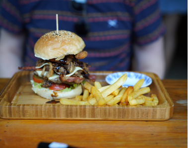

Food
フード
カンボジア料理
タイやベトナム、中国など周辺の国の融合料理。 香辛料はそれほど使わず、甘酸っぱい味付けで野菜をいっぱい使う。
<日本人に人気な料理>
アモック
チキンや雷魚を香辛料や野菜と一緒にココナッツミルクで蒸した、甘い香りのカンボジア風のココナッツカレーのような料理 です。

アモック
カンボジア料理では、魚料理が多く、独特な匂いはありますが、ハマっちゃう料理です。
<日本人になじみの料理>
バイチャー

日本でいう「チャーハン」！
味付けは魚醬という醤油を使うため、日本人の口に合う料理。

カンバーガー
日本でいうハンバーガー！
カンボジア人はハンバーガーが好きで多くのハンバーガー店がある！
ハンバーガー目的でカンボジアに行く人もいるらしい…